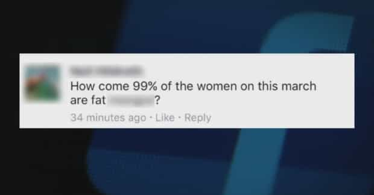
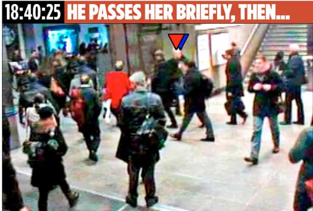
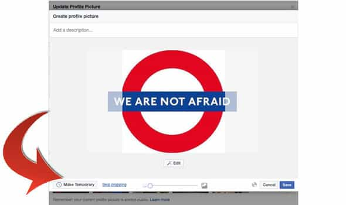

< < < Back
4 Ridiculous “Crimes” British Police Investigated Instead Of Preventing The Westminster Terrorist Attack – Return Of Kings
From Britain to the United States and beyond, police resources are stretched like never before. But instead of deciding to then use the means they have at their disposal in wiser ways, politicians and politically correct (or politically intimidated) police chiefs are opting to go after what amounts to little more than “thought crimes.” Jokes about “women in the kitchen” posted in Canada are even receiving considerable police attention in the United Kingdom, all while true, violent crimes like burglaries are being openly neglected by police leaders.
The tragedy this week at Westminster in London, which led to scores of people being mowed by an Islamic terrorist named Khalid Masood, is an example of incidents that the police should be trying to prevent more. And although the police do devote significant time to tracking terror suspects, their other “priorities,” motivated by SJW and feminist agitations, suggest they could be exerting themselves more in trying to stop real crimes, not the pet ideological projects of leftist extremists.
This perverted fascination with non-crimes, which at best can be called having bad manners, also endangers police themselves. The issuing of instructions to give violent offenders like robbers a wide berth in favor of prosecuting “online trolls” only encourages those with actual malice to offend further. British beat cops, most of whom are unarmed, are therefore exposed to greater threats than they should be, as is the general public.
So here are four categories of purported British crime that should not be warranting any investigation by police whatsoever:
1. Saying women are fat or suggesting they should be in the kitchen

Criticizing someone’s appearance is not something I usually recommend, especially if they cannot control it through disease or disability. Whilst there is nothing wrong with wanting to sleep with attractive women at the expense of unattractive women, going out of your way to mock someone’s bodily features is ill-advised. Return Of Kings, however, has rightfully drawn a line when it comes to the promotion of obesity by choice and demands that healthy heterosexual men find fat girls sexually appealing. The problem is that police in the UK are enforcing unofficial politeness laws, which only seem to protect people like offended feminist women, and digitally tracking down “offenders” so they can visit them in person.
Around the time of the “women’s marches,” Facebook critics of attention-seeking female SJWs pointed out that disproportionate numbers of the marchers rallying against “rape” were overweight and amongst the least likely to arouse anyone’s sexual interest, whether criminal or model citizen. This mirrors a number of other situations where women portray themselves as being attractive by pretending they are at a high risk of sexually-inspired violence. Meanwhile, other anti-feminist shitlords on Facebook said women were better off in the kitchen, an observation at least partially supported by happiness surveys showing females felt better in the age of the housewife.
The result? Triggered Canadian women contacted British police, who then tracked some men down and went to their doorsteps. The irony here is that if a man is ever called “ugly” or “a loser,” the state will not zealously prosecute the “offender” on his behalf. In fact, as you will see below, if a man is perceived as unattractive or not successful (or a woman just isn’t interested in small talk), the police can now label his approach a “hate crime.” Whereas local UK burglaries are now routinely ignored, despite the high risk that a thief will return to intimidate or re-victimize a homeowner, law enforcement has decided to go after men who have a 99.99% chance of never meeting those they criticize, let alone physically or sexually attacking them. I guess they temporarily forgot about terrorist sympathizers like Khalid Masood.
2. Men approaching women (with no threats or violence) being called “hate criminals”
Did you approach a woman in England recently and she didn’t like what you offered with your appearance and/or conversation? Chances are you can be described as a “hate criminal” by local police. Particularly in Nottingham, where this pathetic program was piloted, imagine how much time has been diverted from burglaries, serious assaults, and the investigation of terror suspects to cataloguing and rebuking men who simply try to talk to women. Paradoxically, British authorities weren’t so keen to publicly label Khalid Masood a hate criminal in recent years after he was deemed to be an Islamic radical, well before he killed innocent people.
In two months after the introduction of this policy, Nottingham police had arrested a grand total of two men for “public order offences and actual bodily harm” designated as “misogynistic” acts. The city itself numbers over 300,000 and attracts more people still as commuters to work, tourists, and students. Consequently, this is a ridiculously small number of people, though politicized directives from above will lead to the expansion of what constitutes so-called sexism against women on the streets.
3. Walking past women who accuse you of rape with absolutely zero evidence

“Rape” because a geriatric woman wants to feel sexually sought after.
Some time ago I brought you the story of Mark Pearson, who was falsely accused by actress Souad Faress over an alleged rape that was physically impossible for him to have committed. It turns out, in a development I did not cover in my original article, that Pearson was not shown the CCTV “evidence” against him until six months after his arrest. The Crown Prosecution Service (CPS) bears significant responsibility for this debacle, too, but think about the general law enforcement resources unacceptably and absolutely wasted in this case.
Yet Pearson’s plight is not the only one. Though I am for police listening to complaints of rape, there is no doubt that most allegations involve nothing but the testimony of an accuser, sometimes many years after the claimed attack. Compare this to the information police accumulated about the Westminster terrorist Khalid Masood. MI5, Britain’s version of the FBI, had previously investigated Masood. There was always much more evidence that he was a potential terrorist than there is evidence suggesting that a man accused of rape is actually a rapist. But try telling that to the upper echelons of British law enforcement!
4. Criticizing open border policies or mass immigration
Let them in or you’re a racist!
Early last year Scottish police arrested a man for “offensive” comments about Syrian refugees. They used the spectacularly amorphous Communications Act and declined to elaborate on what he actually said. The Scottish legal system operates separately from England and Wales, but shares many features and, importantly, many of the saddening trends that elevate political correctness above common sense. The ability of British citizens to express concerns about rapidly declining social cohesion is not only significantly curtailed in modern times, but liable to get them imprisoned.
Another British man was arrested for asking a Muslim woman to “explain Brussels” (the terrorist attack of 2016). Notwithstanding that this is a more combative strategy for debating a topic, how this man found himself in the hands of law enforcement is a disgrace, especially as police termed his behavior “racial hatred” when Islam is, in fact, a religion. By that standard, a person criticizing Roman Catholicism should be prosecuted for anti-Irish, anti-Italian, or anti-Polish racism. I wonder how many would-be Khalid Masoods could have been looked at in the time it took to chase down and interrogate this man?
If the police can’t protect us, who will?

Wow, terrorism defeated!
No one should expect the police to counter every threat in society, including the specter of terrorist attacks. But when law enforcement is being consistently pushed to stop rather harmless social infractions or stifle freedom of expression, we have a problem. In addition to the run-of-the-mill criminals who benefit from such a focus, even more bloodthirsty terrorists greatly appreciate the lessened attention they get from the powers that be.
If the West is really serious about preventing mass fatalities and injuries from terrorist attacks, rather than just using them as an opportunity to change Facebook profile photos, the time is ripe for police forces to stop going after people who have done nothing warranting an official investigation.
Read More: British Police: Men Who Try To Get Laid Are Guilty Of Misogynistic “Hate Crimes”